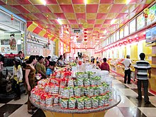

Giới thiệu tỉnh Sóc Trăng
Tỉnh
| Tổng cộng |
1.199.653 người
|
| Dân tộc |
Kinh, Hoa, Khmer,...
|
Sóc trăng là một tỉnh ven biển thuộc đồng bằng sông Cửu Long Việt Nam.
Tỉnh Sóc Trăng nằm ở cửa Nam sông Hậu, cách thành phố Hồ Chí Minh khoảng 231 km, cách Cần Thơ 62 km. Tỉnh Sóc Trăng nằm ở hạ nguồn của sông Hậu, là nơi sông Hậu đổ vào biển Đông tại hai cửa Định An và Trần Đề, với dân số và diện tích đều đứng thứ 6 trong khu vực Đồng bằng sông Cửu Long.
Năm 2018, Sóc Trăng là đơn vị hành chính Việt Nam đông thứ 22 về số dân, xếp thứ 38 về Tổng sản phẩm trên địa bàn (GRDP), xếp thứ 51 về GRDP bình quân đầu người, đứng thứ 47 về tốc độ tăng trưởng GRDP. Với 1.315.900 người dân[3], GRDP đạt 49.346 tỉ Đồng (tương ứng với 2,1432 tỉ USD), GRDP bình quân đầu người đạt 37,5 triệu đồng (tương ứng với 1.628 USD), tốc độ tăng trưởng GRDP đạt 7,20%.
| Mục lục |
1. Nguồn gốc tên gọi
2. Địa lý
3. Lịch sử
4. Hành Chính
5. Văn Hóa
6. Dân cư |
Nguồn gốc tên gọi
Tên gọi Sóc Trăng do từ Srok Kh'leang của tiếng Khmer mà ra. Srok tức là "xứ", "cõi", Kh'leang (ឃ្លាំង) là "kho", "vựa", "chỗ chứa bạc". Srok Kh'leang là xứ có kho chứa bạc của nhà vua. Tiếng Việt phiên âm ra là "Sốc-Kha-Lang" rồi sau đó thành Sóc Trăng. Dưới triều Minh Mạng, Sóc Trăng bị đổi là Nguyệt Giang tỉnh (chữ Sóc biến thành chữ Sông, Trăng thành Nguyệt nên Sóc Trăng biến thành Sông Trăng rồi bị đổi thành Nguyệt Giang).
Đại Nam nhất thống chí viết về sông Ba Xuyên thuộc địa bàn tỉnh An Giang nhà Nguyễn như sau: " ... Sông Ba Xuyên ở phía Nam hạ lưu sông Hậu Giang, cách huyện Vĩnh Định 8 dặm về phía Bắc, trước là sông Ba Thắc, rộng 15 trượng sâu 8 thước, đi về phía Nam 15 dặm, đổ ra cửa biển Ba Xuyên, đi về phía Tây 60 dặm đến trường Tàu, tức là chỗ tàu biển đỗ. Ở đây người Trung Quốc và người Cao Miên ở lẫn lộn, chợ phố liên tiếp, lại 65 dặm đến ngã ba sông Nguyệt, tục gọi là Sóc Trăng,... Năm Kỷ Dậu (1789) hồi đầu thời trung hưng đặt bảo Trấn Di ở phía Bắc sông Ba Thắc, tức sông này."
Địa hình
Tỉnh Sóc Trăng nằm ở cửa Nam sông Hậu, cách thành phố Hồ Chí Minh khoảng 231 km, cách Cần Thơ 62 km, nằm trên tuyến Quốc lộ 1A nối liền các tỉnh Hậu Giang, Thành phố Cần Thơ, Bạc Liêu, Cà Mau. Tỉnh Sóc Trăng có vị trí tọa độ 9°12’ - 9°56’ vĩ Bắc và 105°33’ - 106°23’ kinh Đông. Đường bờ biển dài 72 km và 3 cửa sông lớn là Định An, Trần Đề, Mỹ Thanh đổ ra Biển Đông. Tỉnh Sóc Trăng có vị trí địa lý:
Lịch sự
❖ Từ năm 1976 đến nay
Theo Nghị định số 03/NĐ-76 ngày 24 tháng 2 năm 1976 và Quyết định số 17/QĐ-76 ngày 24 tháng 3 năm 1976, Chính phủ Việt Nam quyết định hợp nhất ba đơn vị hành chính cấp tỉnh ngang bằng nhau là tỉnh Sóc Trăng, tỉnh Cần Thơ và thành phố Cần Thơ để thành lập một tỉnh mới có tên là tỉnh Hậu Giang. Lúc này, huyện Châu Thành (thuộc tỉnh Sóc Trăng cũ) được đổi tên thành huyện Mỹ Tú, do tỉnh Hậu Giang lúc này đã có huyện Châu Thành vốn trước đó thuộc tỉnh Cần Thơ.
Tỉnh Hậu Giang lúc này gồm có thành phố Cần Thơ (tỉnh lỵ), thị xã Sóc Trăng và 12 huyện: Châu Thành, Kế Sách, Long Mỹ, Long Phú, Mỹ Tú, Mỹ Xuyên, Ô Môn, Phụng Hiệp, Thạnh Trị, Thốt Nốt, Vị Thanh, Vĩnh Châu. Tỉnh lỵ tỉnh Hậu Giang lúc đó là thành phố Cần Thơ.
Ngày 26 tháng 12 năm 1991, Quốc hội Việt Nam ban hành Nghị quyết chia tỉnh Hậu Giang thành tỉnh Cần Thơ và tỉnh Sóc Trăng. Tỉnh Sóc Trăng có 7 đơn vị hành chính gồm thị xã Sóc Trăng và 6 huyện: Kế Sách, Long Phú, Mỹ Tú, Mỹ Xuyên, Thạnh Trị, Vĩnh Châu. Tỉnh lỵ là thị xã Sóc Trăng.
Ngày 11 tháng 1 năm 2002, Chính phủ Việt Nam ban hành Nghị định số 04/2002/NĐ-CP, về việc điều chỉnh địa giới hành chính huyện Long Phú để thành lập huyện Cù Lao Dung, tỉnh Sóc Trăng[18]. Huyện Cù Lao Dung chính thức đi vào hoạt động từ ngày 30 tháng 4 năm 2002.
Ngày 31 tháng 10 năm 2003, Chính phủ Việt Nam ban hành Nghị định số 127/2003/NĐ-CP, về việc thành lập huyện Ngã Năm trên cơ sở 24.196,81 ha diện tích tự nhiên và 77.056 nhân khẩu của huyện Thạnh Trị (Thị trấn Ngã Năm và 7 xã). Huyện Ngã Năm chính thức đi vào hoạt động từ ngày 1 tháng 1 năm 2004.
Ngày 8 tháng 2 năm 2007, Chính phủ Việt Nam ban hành Nghị định số 22/2007/NĐ-CP, về việc thành lập thành phố Sóc Trăng thuộc tỉnh Sóc Trăng[19] trên cơ sở toàn bộ diện tích tự nhiên, dân số và các đơn vị hành chính trực thuộc của thị xã Sóc Trăng trước đó.
Ngày 24 tháng 9 năm 2008, Chính phủ Việt Nam ban hành Nghị định số 02/NĐ-CP, thành lập huyện Châu Thành thuộc tỉnh Sóc Trăng.[20] Huyện Châu Thành chính thức đi vào hoạt động từ ngày 1 tháng 1 năm 2009. Tỉnh Sóc Trăng có 10 đơn vị hành chính trực thuộc là: thành phố Sóc Trăng, huyện Châu Thành, huyện Long Phú, huyện Cù Lao Dung, huyện Mỹ Tú, huyện Thạnh Trị, huyện Vĩnh Châu, huyện Ngã Năm, huyện Kế Sách, huyện Mỹ Xuyên.
Ngày 23 tháng 12 năm 2009, Chính phủ ra Nghị quyết số 64/NQ-CP quyết định thành lập huyện Trần Đề[21]. Huyện Trần Đề chính thức đi vào hoạt động kể từ ngày 1 tháng 4 năm 2010.
Ngày 25 tháng 8 năm 2011, Chính phủ ra Nghị quyết số 90/NQ-CP thành lập thị xã Vĩnh Châu và các phường thuộc thị xã Vĩnh Châu, tỉnh Sóc Trăng[22].
Ngày 29 tháng 12 năm 2013, Chính phủ ra Nghị quyết 133/NQ-CP quyết định chuyển huyện Ngã Năm thành thị xã Ngã Năm thuộc tỉnh Sóc Trăng.[23]
Tỉnh Sóc Trăng có 331.164,25 ha diện tích tự nhiên, 1.326.740 nhân khẩu, 11 đơn vị hành chính cấp huyện (gồm thành phố Sóc Trăng, thị xã Vĩnh Châu, thị xã Ngã Năm và 8 huyện: Châu Thành, Cù Lao Dung, Kế Sách, Long Phú, Mỹ Tú, Mỹ Xuyên, Thạnh Trị, Trần Đề) và 109 đơn vị hành chính cấp xã (gồm 80 xã, 17 phường, 12 thị trấn).
Hành chính
Tỉnh Sóc Trăng có 11 đơn vị hành chính cấp huyện gồm 1 thành phố, 2 thị xã, 8 huyện, trong đó có 17 phường, 12 thị trấn và 80 xã:
| Đơn vị Hành chính cấp Huyện |
Thành phố Sóc Trăng |
Thị xã Ngã Năm |
Thị xã Vĩnh Châu |
Huyện Châu Thành |
Huyện Cù Lao Dung |
Huyện Long Phú |
Huyện Kế Sách |
Huyện Mỹ Tú |
Huyện Mỹ Xuyên |
Huyện Thạnh Trị |
Huyện Trần Đề |
| Diện tích (km²) |
76,01 |
242,15 |
465,71 |
236,29 |
264,82 |
263,72 |
352,83 |
368,18 |
373,71 |
287,47 |
377,98 |
| Dân số (người) |
138.087 |
80.885 |
166.286 |
103.518 |
63.886 |
113.856 |
160.181 |
107.976 |
157.772 |
86.864 |
134.409 |
| Mật độ dân số (người/km²) |
1.817 |
334 |
355 |
433 |
241 |
432 |
454 |
293 |
422 |
302 |
356 |
| Số đơn vị hành chính |
10 phường |
3 phường, 5 xã |
4 phường, 6 xã |
1 thị trấn, 7 xã |
1 thị trấn, 7 xã |
2 thị trấn, 9 xã |
2 thị trấn, 11 xã |
1 thị trấn, 8 xã |
1 thị trấn, 10 xã |
2 thị trấn, 8 xã |
2 thị trấn, 9 xã |
| Năm thành lập |
2007 |
2013 |
2011 |
2008 |
2002 |
1926 |
1906 |
1976 |
1958 |
1941 |
2009 |
Văn Hóa
Với một nền văn hóa đặc sắc và khá riêng biệt mà có thể gọi là: "văn hoá xứ giồng", thể hiện qua các mặt trong đời sống hằng ngày của người Sóc Trăng, từ ngôn ngữ, mối quan hệ xã hội, tên đất, tên làng đến tín ngưỡng tôn giáo, ẩm thực và lễ hội của người Kinh, Hoa, Khmer và số ít người Chăm.
❖ Lễ hội

Tu viện Phật giáo tiểu thừa
Lễ hội Ooc Om Boc - Đua Ghe Ngo (Cúng trăng), được tổ chức đua ghe vào Rằm tháng 10 Âm lịch hàng năm, cùng với lễ hội Loi -Pro tip - lễ hội thả đèn nước trên sông Nguyệt (sông Maspero) tại trung tâm thành phố Sóc Trăng. Năm 2013 là Festival Đua Ghe Ngo Đồng bằng sông Cửu Long được tổ chức 2 năm một lần.
Lễ Sen Đôlta (thờ cúng tổ tiên của người Khmer)
Lễ Chol Chnăm Thmây (Vào năm mới),...
Lễ Nghinh Ong (ở Trần Đề)
Thanh minh (của người Kinh và Hoa).
Lễ hội thí vàng (tháng 7), chủ yếu là tại các khu vực có nhiều người Hoa sinh sống.
Lễ kỳ yên ở các đình chùa. Mỗi làng xã người Việt, người Hoa thường có đình chùa và được tổ chức vào khoảng 3 ngày liên tiếp trong năm tùy đình chùa đó. Lễ hội chính là cúng thần và trình diễn cải lương
❖ Di tích
Sóc Trăng là tỉnh có hơn 200 ngôi chùa của cả ba dân tộc Kinh, Hoa, Khmer. Nổi tiếng thì phải kể đến Chùa Dơi (chùa Mã Tộc, Mahatup), Chùa Đất Sét (Bửu Sơn tự), Chùa Khléang, chùa Chén Kiểu (chùa Salon), chùa La Hán, chùa Bốn Mặt (chùa Barai), chùa Quan Âm linh ứng, Chùa Khánh Sơn, chùa Hương Sơn, chùa Đại Giác... Ngoài ra còn còn có đền thờ, đình, miếu, nhà thờ, thánh thất...
Bửu Sơn tự (hay chùa Đất Sét): Đây là một am thờ đã qua nhiều đời của dòng tộc họ Ngô, có tất cả tượng Phật đến linh thú, bảo tháp, đỉnh trầm đều được làm từ đất sét. Phần lớn do ông Ngô Kim Tòng sáng tạo trong suốt 42 năm (1928-1970).
Ngoài ra, trong chùa còn có 6 cây nến lớn hai cây nặng 200 kg hai cây nến nhỏ nặng 100 kg và ba cái đỉnh bằng đất mỗi cái cao 2m. Hai cây nến nhỏ đã đốt liên tục trong 40 năm kể từ năm 1970 khi ông Ngô Kim Tòng qua đời. Sáu cây nến lớn chưa đốt, mỗi cây sẽ có thời gian cháy liên tục khoảng 70 năm.
Chùa Mã Tộc (hay chùa Dơi): Chùa được xây dựng cách đây hơn 400 năm [32]. Chùa còn có tên là chùa Dơi vì ngôi chùa này từ lâu đã là nơi trú ẩn của khoảng 1 triệu con dơi[cần dẫn nguồn], phần lớn có sải cánh 1-1h,2 m, những con lớn nhất có sải cánh lên tới 1,5 m. chúng treo mình trên những cành cây chung quanh chùa để ngủ suốt ngày,đến chiều tối mới bắt đầu lần lượt bay đi kiếm ăn ở những nơi có nhiều vườn trái cây cách xa
Hòa An Hội Quán (chùa Ông Bổn): Chùa được xây dựng vào năm 1875, chùa thờ ông bổn (Bổn Đầu Công).Chùa được xây dựng với kiến trúc độc đáo của người hoa chất liệu toàn bằng đá, gỗ quý từ Trung Quốc chở qua. Di tích này được trải qua 7 đợt trùng tu nhưng vẫn giữ được những giá trị nghệ thuật kiến trúc.Rằm tháng giêng hàng năm nhân tết nguyên tiêu chùa đều có tổ chức lễ hội đấu đèn lồng.
Khu căn cứ tỉnh ủy Sóc Trăng, xã Mỹ Phước, huyện Mỹ Tú.
Đền thờ Bác Hồ, xã An Thạnh Đông, huyện Cù Lao Dung
❖ Đặc sản
Sóc Trăng có nền văn hóa ẩm thực hết sức phong phú và đa dạng, trong đó có thể kể đến như:
- Các loại quà - bánh: Bánh pía Vũng Thơm, Bánh phồng tôm, Bánh ống, Bánh dứa, Cốm dẹp, Mè láo, Bánh in, Bánh cống Đại Tâm, Bánh gừng, Xá bấu (củ cải muối Vĩnh Châu, có ba loại là xá bấu mặn, xá bấu ngọt, xá bấu chua ngọt), Lạp xưởng
- Bún nước lèo, Bún xào, Bún gỏi già, Bò nướng ngói Mỹ Xuyên.
- Bún nước lèo, Bún xào, Bún gỏi già, Bò nướng ngói Mỹ Xuyên.
- Mắm: Mắm chiên Ngã Năm, mắm cá rô không xương
- Nông thuỷ sản: hành tím Vĩnh Châu, nhãn tím Kế Sách, cá bống sao Cù Lao Dung

Một cửa hàng bán trà bánh
ở TP. Sóc Trăng
❖ Du lịch
Hồ Nước Ngọt: khu công viên văn hóa này rộng khoảng 20ha, trên đường Hùng Vương, thành phố Sóc Trăng. Bao gồm 2 hồ: hồ nhỏ còn được gọi là Hồ Tịnh Tâm từ những năm 60 theo nguyên bản Hồ Tịnh Tâm ở Đại hội Huế (vì ông tỉnh trưởng Ba Xuyên bấy giờ người Huế), hồ lớn được đào năm 1982 là công trình thủy lợi do hàng ngàn người dân Sóc Trăng đào thủ công. Năm 2000, trong nỗ lực tạo một sân chơi lành mạnh cho sinh hoạt giải trí của người dân đồng thời cũng làm cơ sở tổ chức các sự kiện quan trọng của địa phương, Ủy ban Nhân dân tỉnh Sóc Trăng đã cho thành lập Ban quản lý dự án Khu văn hóa Hồ Nước Ngọt, tiến hành nâng cấp cải tạo, xây bờ kè, tráng nhựa đường nội bộ, lắp đặt hệ thống chiếu sáng, xây dựng các trung tâm hội chợ, triển lãm… và mở rộng diện tích đến 20ha, biến nơi đây thành một địa chỉ văn hóa thực sự trong đời sống tinh thần của người dân địa phương. Hồ Nước Ngọt đã trở thành điểm đến thân quen của mọi người khi mỗi sáng nhiều bà con vào đây đi bộ, tập thể dục, lớp thanh, thiếu niên đến đây chơi thể thao, các em thiếu nhi đến đây giải trí sau giờ học với nhiều trò chơi hấp dẫn, người lao động đến đây để thư giản, hưởng chút không khí trong lành sau một ngày làm việc cật lực… Hiện đang có đề án xây khu đô thi kế bên hồ này.

Xung quanh Hồ Tịnh Tâm (hồ nhỏ trong khu công viên Hồ Nước Ngọt) - Sóc Trăng
Ngoài ra, còn nhiều khu du lịch đã đang phát triễn như: Vườn cò Tân Long, Cồn Mỹ Phước, Chợ nổi Ngã Năm, Hồ Bể, Điểm du lịch sinh thái Mỏ Ó.
Dân cư
Tính đến ngày 1 tháng 4 năm 2019, dân số toàn tỉnh Sóc Trăng đạt 1.199.653 người, mật độ dân số đạt 394 người/km² Trong đó dân số sống tại thành thị đạt gần 388.550 người, chiếm 32,4% dân số toàn tỉnh, dân số sống tại nông thôn đạt 811.103 người, chiếm 67,6% dân số. Dân số nam đạt 597.922 người, trong khi đó nữ đạt 601.731 người. Tỷ lệ tăng tự nhiên dân số phân theo địa phương giảm 0,75‰.
Sóc Trăng là địa bàn cư trú của các dân tộc Kinh, Hoa, Khmer cùng với người Chăm bản địa.
Tính đến ngày 1 tháng 4 năm 2019, toàn tỉnh có 10 tôn giáo khác nhau đạt 698.461 người, nhiều nhất là Phật giáo có 662.990 người, tiếp theo là Công giáo đạt 23.607 người, đạo Cao Đài có 7.260 người, đạo Tin Lành có 3.770 người, Tịnh độ cư sĩ Phật hội Việt Nam chiếm 468 người, Phật giáo Hòa Hảo đạt 255 người. Còn lại các tôn giáo khác như Hồi giáo có 99 người, Minh Lý Đạo có tám người, Minh Sư Đạo và Bửu Sơn Kỳ Hương mỗi đạo chỉ có hai người.
Hình ảnh
Chùa Khleang ở phường 6
, TP. Sóc Trăng
Bửu Sơn tự (tục gọi chùa
Đất Sét) ở TP. Sóc Trăng
Chùa La Hán, phường 8
, TP Sóc Trăng
Chánh điện chùa Dơi
(Mahatup),p3 ,TP Sóc Trăng

Sông Masepo, TP.Sóc Trăng
Đền thờ Bác Hồ - An Thạnh
Đông, huyện Cù Lao Dung
Tu viện Phật giáo tiểu
thừa, Sóc Trăng
>
Đền thờ Bác Hồ - An Thạnh
Đông, huyện Cù Lao Dung
Tu viện Phật giáo tiểu
thừa, Sóc Trăng
>
Mục lục tham khảo
Bách khoa toàn thư mMục lục tham khảoở Wikipedia tỉnh Sóc trăng: https://vi.wikipedia.org/wiki/S%C3%B3c_Tr%C4%83ng